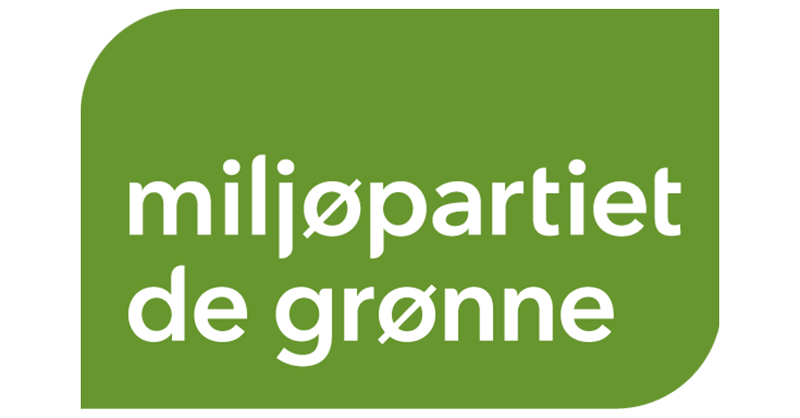

Kontakt
Om oss
Ingen er perfekte, men alle kan gjøre litt. Sammen kan vi endre norsk politikk for alltid.
Politikkområder
Miljøpartiet De Grønne vil skape et samfunn hvor vi har gode liv uten at vi ødelegger for andre.
Klima
Byer
Natur og Dyr
Levende hav